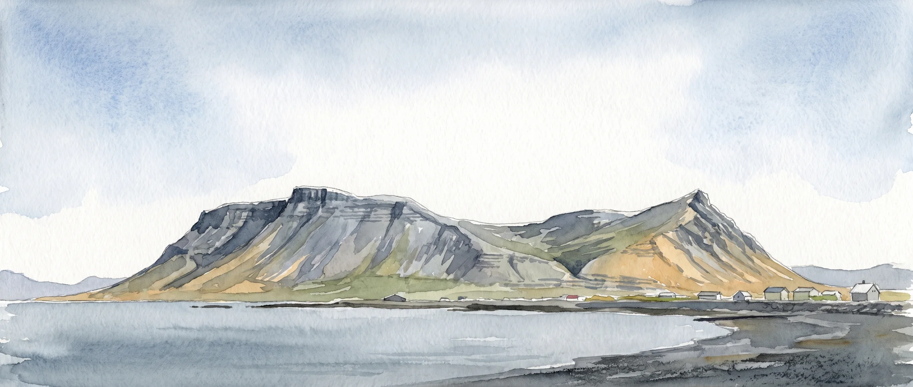

Kauptilboð, kaupsamningar, leigusamningar og ágreiningur um fasteignir, fyrir einstaklinga og fyrirtæki.


Fastur punktur þegar mest á reynir
Lögfræðiþjónusta á Akranesi
Alhliða lögfræðiþjónusta fyrir einstaklinga og fyrirtæki á Akranesi og nágrenni. Fyrsta samtal er án endurgjalds.
 Baldvin Már KristjánssonHéraðsdómslögmaður
Baldvin Már KristjánssonHéraðsdómslögmaður
Héraðsdómslögmaður
Baldvin Már Kristjánsson
Baldvin hefur tekið við rekstri Lögfræðiþjónustu Akraness, sem hefur veitt lögfræðiþjónustu á Akranesi frá árinu 2011. Hann sinnir málum einstaklinga og fyrirtækja á Akranesi og nágrenni.
Hann lauk grunnnámi í lögfræði við Háskólann í Reykjavík árið 2017 og meistaranámi (LL.M.) við Háskólann í Lundi í Svíþjóð árið 2019. Meðfram námi og að því loknu starfaði hann hjá Lögheimtunni, Arion banka og NJORD Law Firm í Kaupmannahöfn.
2017BA í lögfræði, Háskólinn í Reykjavík
2019LL.M., Háskólinn í Lundi
ReynslaLögheimtan · Arion banki · NJORD Law Firm, Kaupmannahöfn
SviðAlhliða lögfræðiþjónusta fyrir einstaklinga og fyrirtæki
Þjónusta
Alhliða lögfræðiþjónusta
Stofan tekur að sér mál einstaklinga og fyrirtækja á Akranesi og nágrenni. Hvert mál hefst á samtali, og fyrsta samtal er án endurgjalds.
Skipti dánarbúa, erfðaskrár, kaupmálar og önnur fjölskyldumál.
Samningagerð, ágreiningsmál og innheimta krafna fyrir einstaklinga og fyrirtæki.
Mat á bótarétti og ágreiningur um tjón og vátryggingar.
Ráðningarsamningar, uppsagnir og ágreiningur á vinnustað.
Stofnun félaga, hluthafasamningar og lögfræðiráðgjöf í rekstri.
Auk þess er veitt almenn lögfræðiráðgjöf fyrir einstaklinga og minni fyrirtæki. Ef málið fellur ekki undir neinn þessara flokka er samt velkomið að hafa samband.
Ferlið
Svona gengur málið fyrir sig
- 01
Fyrsta samtal
Þú lýsir málinu og færð mat á stöðunni og mögulegum leiðum. Samtalið er án endurgjalds.
- 02
Gagnaöflun
Aflað er þeirra gagna sem málið krefst og réttarstaðan metin út frá þeim.
- 03
Málið unnið
Málinu er fylgt eftir með samningum eða fyrir dómi, eftir því sem við á, þar til niðurstaða liggur fyrir.
- 04
Niðurstaða
Farið er yfir niðurstöðuna með þér áður en gengið er frá málinu, svo að þú vitir hvað þú samþykkir.

Lögfræðiþjónusta á Akranesi frá 2011
Algengar spurningar
Það sem fólk spyr oftast um
Hvað kostar að fá lögmann í mitt mál?
Fyrsta samtal er án endurgjalds. Kostnaður eftir það fer eftir eðli og umfangi málsins, og best er að spyrja um hann í fyrsta samtali.
Er fyrsta samtalið skuldbindandi?
Nei. Farið er yfir stöðuna og mögulegar leiðir, og þú ákveður svo hvort haldið er áfram.
Hvers konar mál tekur stofan að sér?
Stofan tekur að sér fasteignamál, erfðamál og fjölskyldumál, samningagerð og innheimtu, skaðabótamál, vinnuréttarmál og félagaréttarmál, auk almennrar lögfræðiráðgjafar. Sé málið annars eðlis er best að hafa samband og spyrja.
Hvað þarf ég að hafa tilbúið fyrir fyrsta samtal?
Stutta lýsingu á málinu og þau gögn sem tengjast því, til dæmis samninga, bréf eða tölvupósta. Ekkert þarf að vera fullfrágengið.
Hvenær á ég að hafa samband?
Sem fyrst. Í mörgum málum gilda frestir, til dæmis til að gera kröfu eða bregðast við bréfi, og því fyrr sem staðan er skoðuð, því fleiri leiðir eru yfirleitt færar.
Er þjónustan bara fyrir fólk á Akranesi?
Nei. Stofan er á Akranesi en tekur að sér mál fyrir fólk og fyrirtæki hvar sem er á landinu, og fyrstu samskipti geta farið fram í síma eða tölvupósti.
Hafa samband
Fyrsta samtal er án endurgjalds
Hringdu, sendu tölvupóst eða lýstu erindinu í forminu. Fyrirspurn skuldbindur þig ekki til neins.
Sími857 8660
Netfangbaldvin@delikt.is
OpnunartímiVirka daga kl. 9 til 16
HeimilisfangGarðabraut 33, 300 Akranes